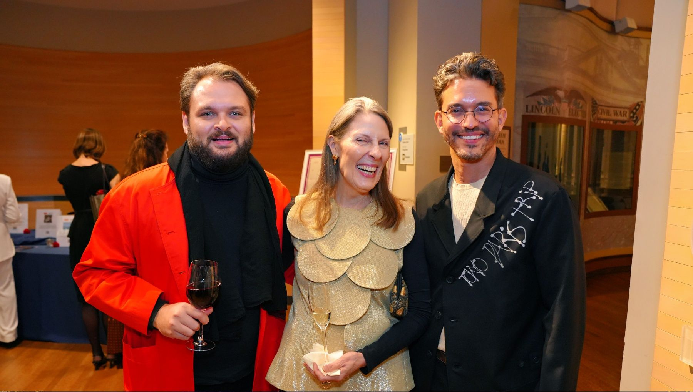
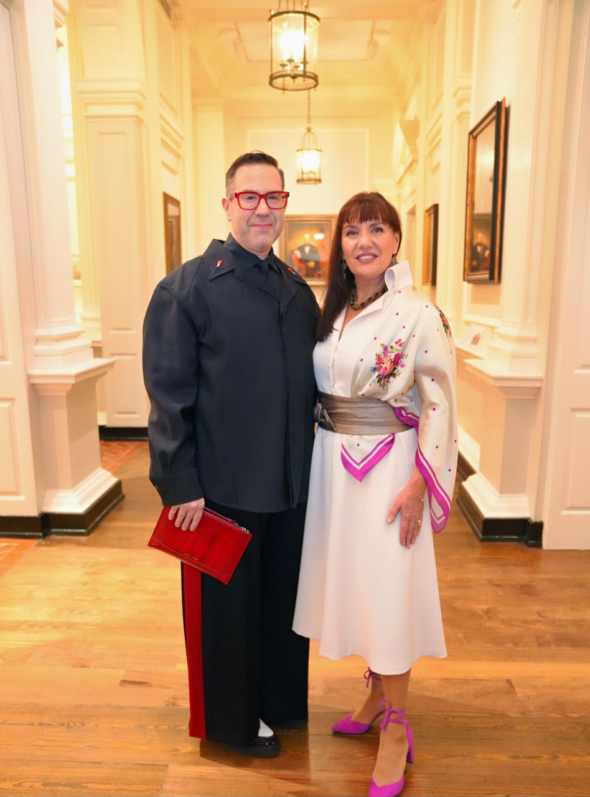
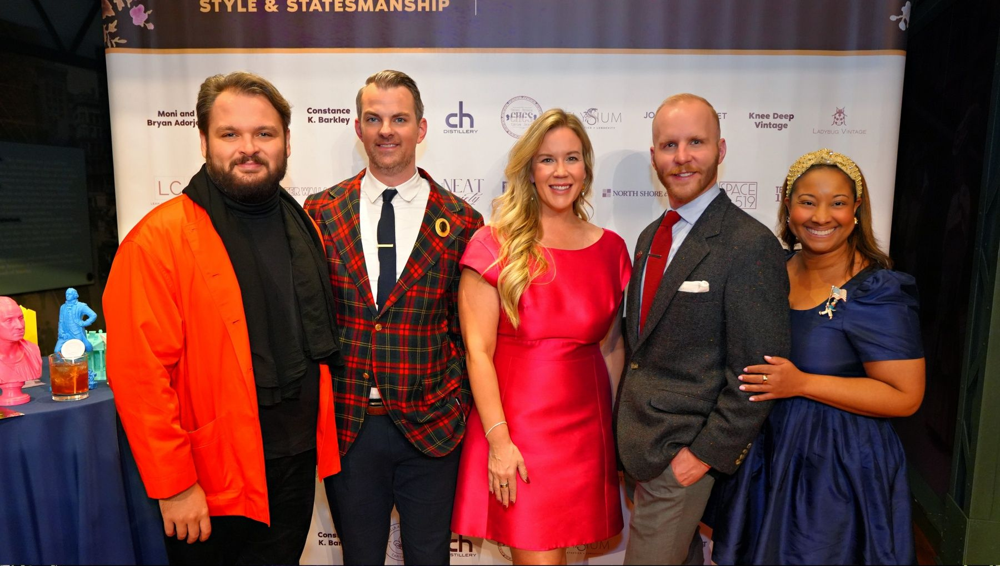
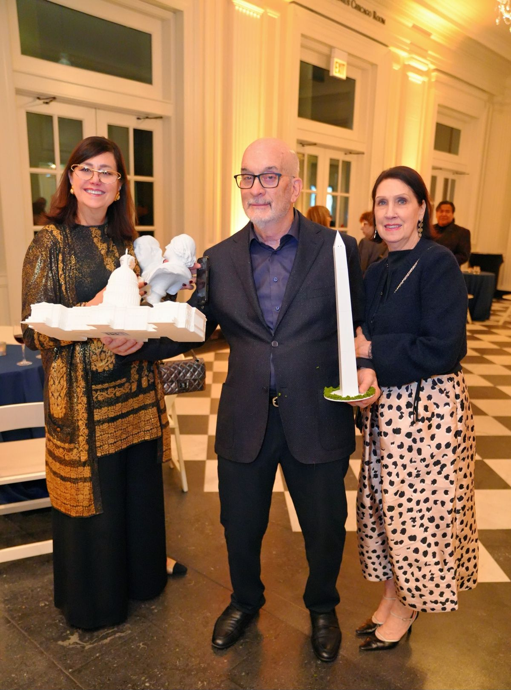
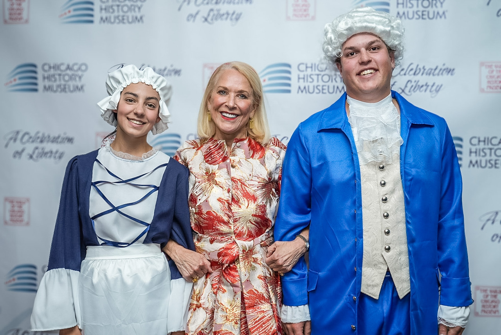
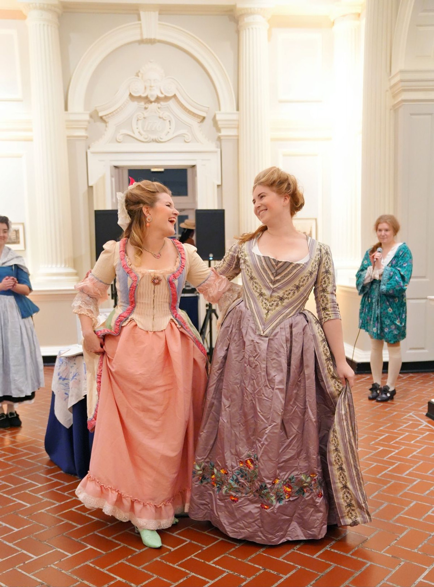
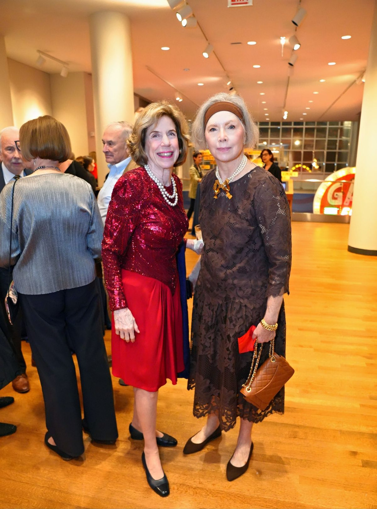
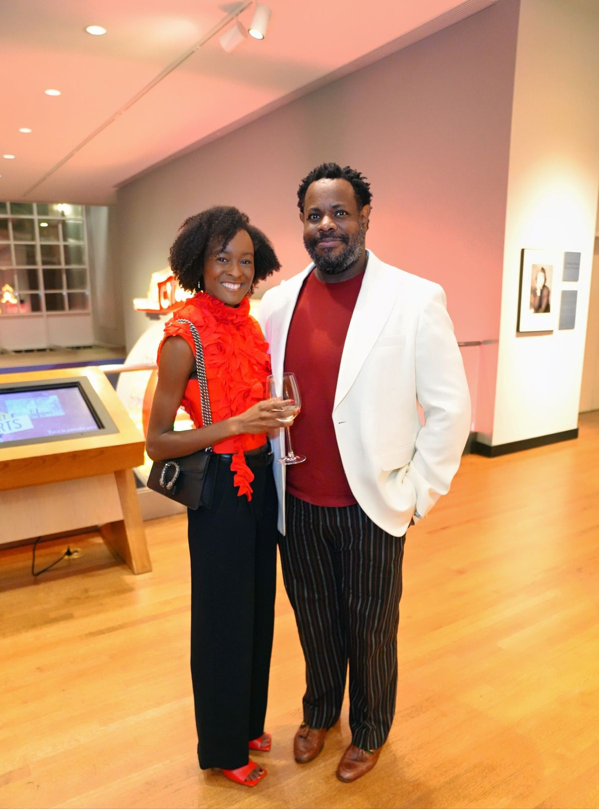
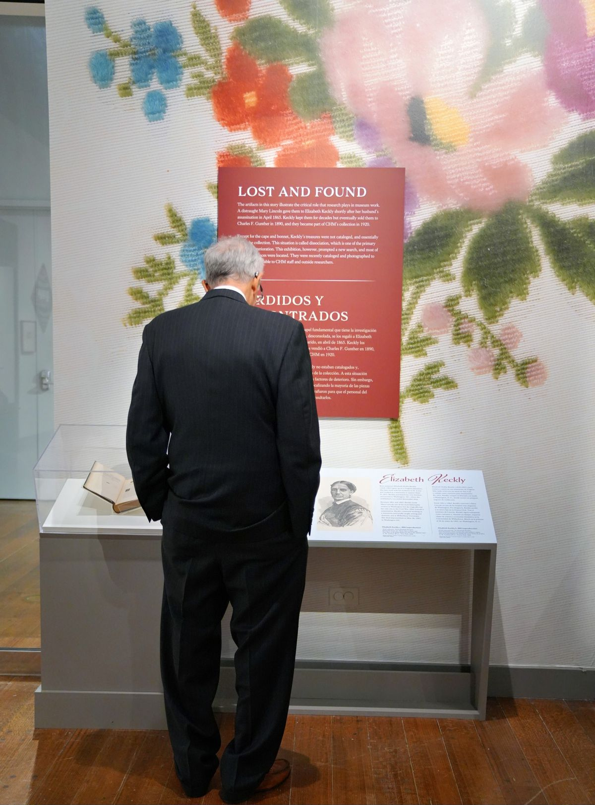
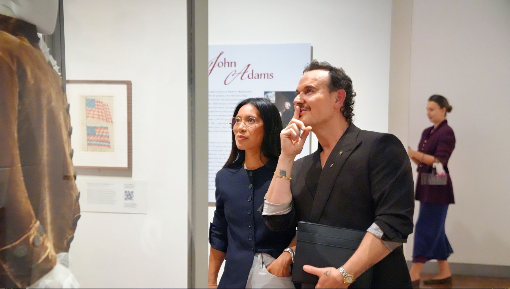

“What made this evening so special was the opportunity to bring American history to life through fashion. Clothing tells us so much about the people who wore it, the times they lived in, and the image they wanted to project. We wanted to create a celebration that was not only elegant and entertaining but also reminded guests why preserving these extraordinary pieces of history matters.” Frank Rubel, First Vice President of the Costume Council of the Chicago History Museum.

The Costume Council of the Chicago History Museum welcomed guests recently for A Celebration of Style & Statesmanship, a festive opening-night celebration of the Museum's exhibition, “Threads of a Nation: Preserving Presidential Clothing”. The evening brought together Chicago's fashion community, cultural philanthropists, and history enthusiasts to explore the intersection of fashion, politics, and American identity as the nation recognizes its 250th anniversary.

The exhibition offers a rare glimpse into American history through garments and accessories associated with George and Martha Washington, John Adams, and Abraham and Mary Lincoln. From George Washington's elegant black velvet suit to clothing associated with Mary Todd Lincoln, the collection reveals how fashion has reflected power, personality, and the changing American experience.
Karen Peters, President of the Costume Council which was founded in 1974 to support the Museum’s collection which has grown to be one of the world’s premier costume collections with over 50,000 pieces dating from the 1750s to the present day, told us:
“We are thrilled to share these extraordinary pieces from the Chicago History Museum’s extensive collection, bringing such an important part of American history to life. It is exciting to have these remarkable treasures on view for the public to enjoy and appreciate. We are so grateful for your support in helping us spread the word!”

The evening began with a VIP champagne reception, followed by welcoming remarks from Michael J. Anderson, the newly appointed Edgar D. and Deborah R. Jannotta President and Chief Executive Officer of the Chicago History Museum.

The evening was co-chaired by Anika Allen and Katie Beard, whose leadership, creativity, and dedication were instrumental in bringing the ambitious celebration to life. The co-chairs were supported by committee members Moni Adorjan, Athena Golianis, Courtney Hopkins, Karen Peters, Frank Rubel, Carol Seeling, and Karen Zupko, working closely with Chicago History Museum staff, artists, donors, sponsors, and creative partners.
The program featured a presentation by distinguished fashion historian and curator Timothy Long, a former curator at the Chicago History Museum and the Museum of London and well-remembered by many Chicago fans. Long shared fascinating insights into presidential dress and the historical significance of the extraordinary garments preserved in the Museum's collection.

Guests then enjoyed cocktails, hors d'oeuvres, dinner, and an opportunity to explore the exhibition. Members of the Chicago Historical Costume Society added a theatrical dimension to the evening with live demonstrations of 18th-century dressing, bringing the elaborate fashions and dressing rituals of the period to life.

Presidential-themed décor created by local artist Phillip Nuveen provided a playful nod to the occasion, with colorful representations of American landmarks, presidential busts, and the Washington Monument adding a whimsical touch to the festivities.

One of the evening's most distinctive highlights was the debut of “Mary Todd Lincoln: Flowers of History—Preserved in Silk”, an exclusive, limited-edition collection of silk accessories created in collaboration with Chicago fashion designer Alesia Chaika, the Chicago History Museum, and the Costume Council.
Inspired by a historic textile fragment in the Museum's collection attributed to a dress worn by Mary Todd Lincoln, the design reimagines a delicate floral pattern as contemporary wearable art. Richly colored bouquets of pink, red, purple, and blue flowers appear against an ivory background framed by a deep plum border.
Crafted from 100% mulberry silk, the collection includes just 20 numbered scarves measuring 34 by 34 inches and 10 coordinating 12-by-12-inch pocket squares. A framed example of the scarf was also featured in the evening's silent auction.
The collaboration celebrates the beauty and craftsmanship of historic textiles while introducing their stories to a new generation of fashion enthusiasts. The limited-edition pieces were offered for purchase in support of the Costume Council's mission, providing guests with an opportunity to own a wearable piece of history and may be ordered through the Museum.
As guests explored the exhibition, enjoyed the festivities, and celebrated the artistry of both historic and contemporary fashion, A Celebration of Style & Statesmanship offered a compelling reminder that clothing is far more than ornament. It is a powerful record of the people, politics, and personalities that have shaped American history.

In the lead-up to the celebration, the Costume Council also paid tribute to its remarkable legacy of fashion preservation and conservation through a special video presentation created in collaboration with Chicago fashion historian, longtime industry icon, and former Costume Council President Nena Ivon.

The video explored the history of the Costume Council's legendary Donors Balls, glamorous fundraising galas that brought together Chicago's fashion, social, and philanthropic communities for decades. Known for their elaborate themes, spectacular fashions, and memorable celebrations, the Donors Balls occupy a distinctive place in Chicago's fashion history.

The celebration also highlighted a special partnership with North Shore Exchange, the luxury consignment boutique and philanthropic organization. Earlier in October, North Shore Exchange hosted a cocktail reception and consignment drive benefiting the Costume Council, inviting supporters to transform their gently loved designer fashions and accessories into meaningful contributions.
For more information about Threads of a Nation: Preserving Presidential Clothing, visit chicagohistory.org.